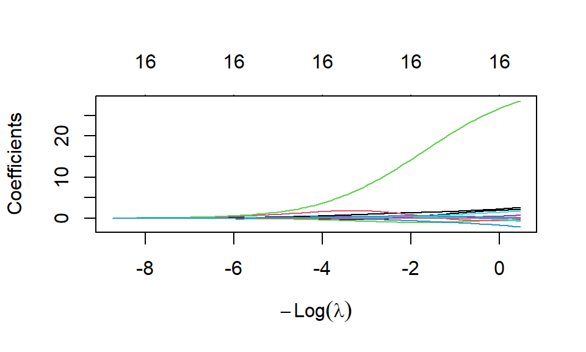
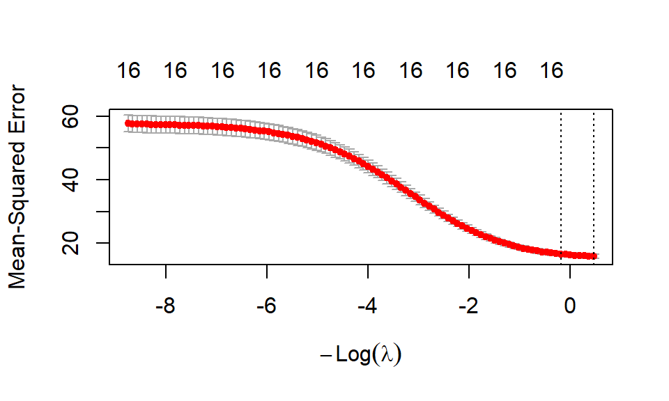
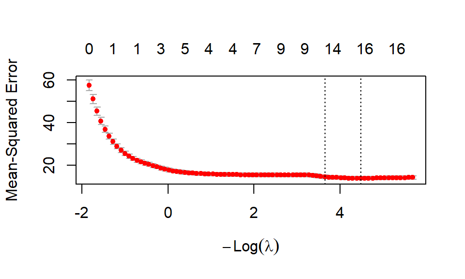
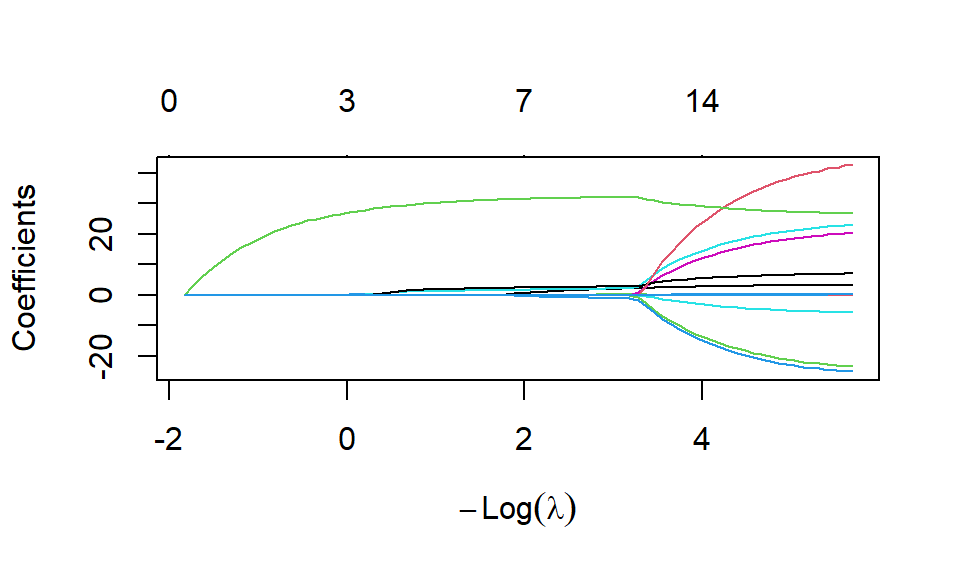
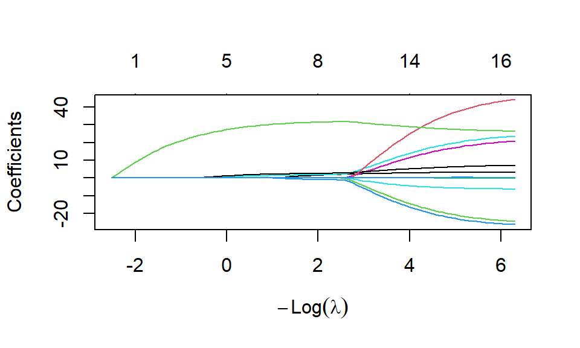

# Väljer ut de kemiska variablerna
lakesurvey <-
lakesurvey |>
select(!X_SMHI:Day)
# Skapar designmatrisen och konverterar objektet till en matris
x <- lakesurvey |>
select(!`TOC mg/l`) |>
as.matrix()
# Skapar responsvariabeln och konverterar objektet till en matris
y <- lakesurvey |>
select(`TOC mg/l`) |>
as.matrix()
ridgeModel <- glmnet(x, y, alpha = 0)27 Regularisering
En stor del av statistisk inlärning berör generalisering, att modellen som tränas också ska kunna effektivt användas på ny data. Vid stora datamaterial, med många observationer och variabler, krävs ofta en flexibel men komplex modell för att modellen ska prestera bra, men det ger också en överhängande risk för att modellen överanpassas.
Komplexitet kan mätas på olika sätt beroende på modellen; i det linjära fallet är det antalet variabler och förekomsten av interaktioner eller transformationer som har den största påverkan. Ett sätt att minska några av dessa dimensioner är att använda algoritmer för variabelselektion som “automatisk” väljer variabler utifrån ett valt utvärderingsmått. Mer om detta går att läsa i Avsnitt 13.2. En stor nackdel med dessa algoritmer är att de oftast är giriga eller mycket beräkningstunga. En girig algoritm betyder att den vid varje steg vill hitta den bästa förbättringen av modellen och riskerar att missa steg som ger en sämre förbättring just nu men den “bästa” förbättringen två steg framåt.
Istället för giriga algoritmer finns ett annat sätt att motverka överanpassning som inte behöver välja variabler; regularisering. Idén bakom denna metod är att hindra modellen för att bli för komplex och ge ett (förhoppningsvis) bättre generaliseringsfel genom att begränsa parametrar för variabler som inte anses tillföra något till anpassningen. Regularisering tillsammans med en flexibel och komplex modell bör leda till en bra anpassning.
27.1 Standardisering
För de former av regularisering som begränsar utefter parametervärden, behöver vi standardisera de förklarande variablerna först. Standardisering innebär att varje variabel får samma väntevärde och varians, så att skillnader i skala inte ska påverka storleken av parametern.
Varje kontinuerliga variabel standardiseras genom: \[ \begin{aligned} z_{ij} = \frac{x_{ij} - \mu_{x_j}}{\sigma_{x_j}} \end{aligned} \tag{27.1}\] där \(z_{ij}\) är det standardiserade värdet för observation \(i\) för variabel \(j\), \(x_{ij}\) är det ursprungliga värdet för samma observation och variabel, \(\mu_{x_j}\) är medelvärdet för variabel \(j\) och \(\sigma_{x_j}\) är standardavvikelsen för variabel \(j\).
Den variabeln får nu \(E(z) = 0\) och \(Var(z) = 1\) vilket innebär att alla värden kan tolkas som “enheter standardavvikelse från sitt medelvärde”. Detta gäller för alla variabler vilket innebär att variablerna nu inte längre har några skillnader i skala.
Vissa metoder integrerar standardiseringen direkt i metoden, t.ex. glmnet() för (seq-elastic-net?), och visar sedan resultaten i originalskalan sedan. Metoden hanterar både standardiseringen och “återstandardiseringen” utan att det riktigt syns, allt för att göra de slutgiltiga tolkningarna relaterbara till datamaterialet som samlats in.
För andra typer av variabler behöver vi hantera detta på andra sätt. Variabler som följer ordinalskala skalas om som att den följer nominalskala, det vill säga indikatorkodas (se Avsnitt 6.1). Dessa binära variabler standardiseras inte enligt Ekvation 27.1, utan lämnas som de är eftersom deras skala redan är likvärdig.
CautionÖvning 1
En regressionsmodell innehåller en förklarande variabel \(X_1\) som mäts i meter. Innan variablerna har standardiserats är dess skattade koefficient \(\beta_1=2\). Samma variabel uttrycks därefter i centimeter som \(X_1^*=100X_1\). För att modellens anpassade värden ska vara oförändrade ersätts koefficienten med \(\beta_1^*=0.02\), så att \(2X_1=0.02X_1^*\). Vilka av följande påståenden är korrekta?
- Sant. Standardisering gör variablernas skalor mer jämförbara och motverkar att valet av måttenhet avgör hur hårt olika koefficienter straffas.
- Falskt. LASSO-straffets bidrag ändras från \(|\beta_1|=2\) till \(|\beta_1^*|=0.02\). Även LASSO påverkas alltså av variabelns skala.
- Sant. Eftersom \(2X_1=0.02X_1^*\) blir varje anpassat värde detsamma. Residualerna och därmed SSE förändras därför inte.
- Falskt. I de regulariserade regressionsmodellerna straffas lutningskoefficienterna, men inte interceptet \(\beta_0\).
- Sant. Ridge-straffet beror på koefficienternas kvadrater. Enheten som används för variabeln kan därför kraftigt förändra straffet om variablerna inte har standardiserats.
27.2 Ridge regression
I vanlig linjär regression minimerar vi SSE:
\[ \begin{aligned} f(\boldsymbol{\beta}) = \sum_{i=1}^n \left(Y_i - \beta_0 + \sum_{j = 1}^p \beta_j X_{ij} \right)^2 \end{aligned} \] där vi kan anse \(f(x_i) = \beta_0 + \sum_j^{p}\beta_jX_{ij}\).
Inom Ridge regression lägger vi till en straffterm till denna kostnadsfunktion enligt:
\[ \begin{aligned} f_{Ridge}(\boldsymbol{\beta}) = \sum_{i=1}^n \left(Y_i - \beta_0 + \sum_{j = 1}^p \beta_j X_{ij} \right)^2 + \lambda \sum_{j = 1}^p \beta_j^2 \end{aligned} \] där \(\lambda \ge 0\). Notera att ingen straffterm sätts på \(\beta_0\) utan bara respektive lutningsparameter. \(\lambda\) är en hyperparameter som måste bestämmas där ett värde av 0 indikerar på inget straff (bara vanlig SSE) och stora värden indikerar på stora straff där många parametrar sätts till väldigt små värden. Strafftermen kallas för \(L_2\)-regularisering.
Dessa två delar av funktionen samverkar på följande sätt. När en variabel inte har något samband med Y, kommer dess effekt på \(f(x_i)\) vara liten och vi kan reducera dess parametervärde till nära 0 för att också effekten på strafftermen ska vara så liten som möjligt. När en variabeln har ett samband med Y, kommmer istället dess effekt på \(f(x_i)\) vara noterbar och nollskilda värden kommer ge en förbättring av SSE mer än straffet ökar. Syftet med straffet är alltså att väga samman variabelns effekt i modellen med det tillhörande straff som parametern får.
För logistisk regression agerar strafftermen på samma sätt, men med en annan kostnadsfunktion lämplig för problemet.
Notera
De maximala värdena som fås i träningen sker när \(\lambda = 0\) vilket motsvarar en ren minsta kvadratskattning. När \(\lambda > 0\) kommer parametrarna endast bli mindre. Ridge ger oss en flexibel modell där vi tillåter alla effekter som kan identifieras i träningsmängden, men som också tar bort effekten av variabler som beskriver samma sak som en annan eller som är överflödiga.
Säg att vi vill skapa en regressionsmodell på datamaterialet om alla sjöar, lakesurvey. Vi är intresserade av att undersöka hur mängden organiskt kol, TOC mg/l, kan beskrivas av de övriga kemiska variablerna. För Ridge (och senare regulariseringsmetoder) används funktioner från paketet glmnet. Funktionen glmnet() kan anpassa olika former av regression där argumenten är:
x: en matris med förklarande variabler,y: en vektor med responsvariabeln,family: anger vilken typ av modell som anpassas,"gaussian"för linjär regression,alpha: en mixparameter, för Ridge ska denna vara 0, se Avsnitt 27.5 för mer information,standardize: ifall vi vill att de förklarande variablerna standardiseras i anpassningen, standard ärTRUE.
Vi kan titta på modellen genom olika hjälpfunktioner såsom plot, print, coef och predict.
plot(ridgeModel)
Denna figur är något otydlig men den visar hur koefficienternas värden justeras beroende på hur starkt straff som sätts på regulariseringen. Notera att x-axeln visar \(-log(\lambda)\) vilket gör att den kan vara negativ trots att \(\lambda \ge 0\). Vi ser att en variabel har en mycket stor påverkan när inget straff sätts \(-log(\lambda) \approx 0\) men som snabbt reduceras till ett mindre värde när starkare straff sätts \(-log(\lambda) \approx -4\).
Vad detta diagram inte ger oss är en indikation vilket \(\lambda\) som bör väljas för den bästa modellen. Vi kan utläsa med hjälp av print(ridgeModel) alla olika modeller för 100 olika värden på straffet, men det ändå svårt att välja rätt. Istället kan vi använda korsvalidering genom cv.glmnet().
cvRidgeModel <- cv.glmnet(x, y, alpha = 0)
plot(cvRidgeModel)
Figuren indikerar genom de vertikalt streckade linjerna två värden på \(\lambda\) där den bästa modellen fås, vilket i detta fall nästan indikerar på inget straff alls.
print(cvRidgeModel)
Call: cv.glmnet(x = x, y = y, alpha = 0)
Measure: Mean-Squared Error
Lambda Index Measure SE Nonzero
min 0.629 100 15.91 0.7294 16
1se 1.206 93 16.62 0.7087 16Objektet innehåller lambda.min och lambda.1se, den första vilket värde på \(\lambda\) som ger det minsta korsvalideringsfelet och det andra vilket värde på \(\lambda\) som ger en regulariserad modell. Vi kan plocka ut dessa värden genom cvRidgeModel$lambda.min som vi sedan kan ange i coef() eller predict() för att visa koefficienterna eller prediktionerna från en modell med det angivna \(\lambda\).
coef(cvRidgeModel, s = "lambda.1se")17 x 1 sparse Matrix of class "dgCMatrix"
lambda.1se
(Intercept) 5.949738117
Depth m 1.850561321
Temp_ øC -0.020080634
pH -0.549270046
Cond_ mS/m25øC 0.056534328
Ca meq/l 1.321122702
Mg meq/l 0.436898870
Na meq/l 2.137434642
K meq/l -0.601597503
Alk_/Acid meq/l -0.142907355
SO4_IC meq/l -1.560043615
Cl meq/l -0.221549251
NO2+NO3-N ug/l -0.001340323
Tot-N_ps ug/l 0.002614072
Tot-P ug/l 0.004048634
Abs__F 420nm/5cm 25.945417096
Si mg/l 0.282599961predict(cvRidgeModel, newx = x, s = "lambda.1se") |>
head() lambda.1se
[1,] 7.710304
[2,] 7.258081
[3,] 11.924829
[4,] 9.228439
[5,] 8.929821
[6,] 8.634802För prediktioner vill vi egentligen använda en helt ny matris av värden som vi vill prediktera.
Tips
Mer dokumentation och exempel om glmnet kan hittas här.
27.3 LASSO regression
Ridge straffar parametrarna kraftigt med anledning av de kvadrerade parametrarna genom \(\beta_j^2\). Denna sorts regularisering blir då känslig för extremt stora parametrar. Vi kan använda ett mindre straff (\(L_1\)-regularisering) genom LASSO regression om vi ändrar att strafftermen använder absolutbeloppet.
\[ \begin{aligned} f_{LASSO}(\boldsymbol{\beta}) = \sum_{i=1}^n \left(Y_i - \beta_0 + \sum_{j = 1}^p \beta_j X_{ij} \right)^2 + \lambda \sum_{j = 1}^p |\beta_j| \end{aligned} \] där \(\lambda \ge 0\).
Låt oss istället för Ridge, använda LASSO regularisering för regressionsmodellen för lakesurvey. Argumentet alpha = 1 i glmnet ger oss en modell med LASSO-regularisering. Vi börjar direkt med korsvalideringsvarianten av funktionen för att få hjälp med att välja hur mycket straff som ska tillämpas.
cvLASSOModel <- cv.glmnet(x, y, alpha = 1)
plot(cvLASSOModel)
coef(cvLASSOModel, s = "lambda.1se")17 x 1 sparse Matrix of class "dgCMatrix"
lambda.1se
(Intercept) 0.767146208
Depth m 2.511293326
Temp_ øC 0.002358264
pH .
Cond_ mS/m25øC 0.029777058
Ca meq/l 10.217034948
Mg meq/l 7.889265891
Na meq/l 4.690369956
K meq/l 14.088418453
Alk_/Acid meq/l -8.595441048
SO4_IC meq/l -9.589766992
Cl meq/l -1.759360728
NO2+NO3-N ug/l -0.002766478
Tot-N_ps ug/l 0.001212844
Tot-P ug/l 0.003721458
Abs__F 420nm/5cm 30.133624225
Si mg/l . predict(cvLASSOModel, newx = x, s = "lambda.1se") |>
head() lambda.1se
[1,] 6.506225
[2,] 6.956406
[3,] 11.610746
[4,] 8.596475
[5,] 8.153851
[6,] 7.759693Vi ser att vid lambda.1se för LASSO har vi två variabler som satts till 0, markerat som . i koefficienttabellen.
Notera
Vi kan visa hur straffet påverkar koefficienterna i LASSO till skillnad från Ridge genom:
glmnet(x, y, alpha = 1) |>
plot()
Siffrorna högst upp i diagrammet visar hur många nollskilda koefficienter som finns vid respektive nivå av straff som i detta diagram till skillnad från Ridge faktiskt minskas. Detta visar hur LASSO är “bättre” på att reducera modellen och faktiskt sätter koefficienterna till 0.
27.4 Jämförelse mellan Ridge och LASSO
Båda former av regularisering hjälper till att reducera antalet variabler som har en distinkt effekt på responsvariabeln men de har också vissa skillnader.
I båda metoderna väljs \(\lambda\) som en hyperparameter men till skillnad från Ridge ger LASSO stora värden på \(\lambda\) att flera parametrar sätts till 0. Vid multikollinearitet delar Ridge regularisering på effekten till alla variabler som beskriver samma relation medan LASSO “väljer” en parameter som nollskild och de övriga sätts 0. LASSO resulterar i en modell där många parametrar är nära 0 vilket ger oss möjligheten att träna om modellen med enbart de nollskilda parametrarna. Ridge passar bra när \(Y_i\) beror på de flesta av variablerna då många av variablerna får ungefär samma effektstorlek. LASSO däremot passar bra när endast ett fåtal variabler har ett samband med responsvariabeln och den resulterande modellen har få variabler med hög effektstorlek och resten 0. I de flesta tillfällen vet vi inte detta förrän modellerna tränas så ett tips är att testa båda metoderna och se vilken som ger bäst prediktioner.
Notera
Dessa metoder tränas med en speciell optimeringsalgoritm som kallas för Coordinate Descent. Kortfattat kan algoritmen fokusera på specifika parametrar att optimera vid varje iteration till skillnad från de algoritmer vi tidigare tagit upp. Vi kommer inte gå in mer på denna metod i detta underlag men mer information finns här.
Skillnaderna i de två metodernas tillvägagångssätt medför att LASSO kan vara lättare att tolka medan Ridge är enklare att göra inferens för. Ridge kan ses som en skalning (med \(\lambda\)) av de vanliga minsta kvadratskattningsmatriserna och vi kan då använda inferensteori därifrån. Detsamma gäller inte för LASSO.
CautionÖvning 2
Två tänkbara lösningar för en regressionsmodell ska jämföras. Interceptet är inte inkluderat i koefficientvektorerna.
- Lösning A har \(SSE_A=20\) och koefficienterna \(\boldsymbol{\beta}_A=(3,0,0)\).
- Lösning B har \(SSE_B=22\) och koefficienterna \(\boldsymbol{\beta}_B=(1,1,1)\). För Ridge används kostnadsfunktionen \(SSE+\lambda\sum_{j=1}^p\beta_j^2\), medan LASSO använder \(SSE+\lambda\sum_{j=1}^p|\beta_j|\). Vilka av följande påståenden är korrekta?
- Falskt. Båda lösningarna har samma LASSO-straff eftersom \(|3|=|1|+|1|+|1|=3\). Lösning A har lägre SSE och kommer därför att ha lägre LASSO-kostnad för alla \(\lambda\geq0\).
- Sant. Båda lösningarna har LASSO-straffet 3. Kostnaderna blir därför \(20+3=23\) för lösning A och \(22+3=25\) för lösning B.
- Sant. Ridge-kostnaderna är \(20+9\lambda\) respektive \(22+3\lambda\). Likheten \(20+9\lambda=22+3\lambda\) ger \(\lambda=\frac{1}{3}\).
- Sant. När \(\lambda=0\) försvinner strafftermen. Eftersom \(SSE_A=20\) är mindre än \(SSE_B=22\) väljs lösning A av båda metoderna.
- Sant. För lösning A blir Ridge-kostnaden \(20+1\cdot(3^2+0^2+0^2)=29\). För lösning B blir den \(22+1\cdot(1^2+1^2+1^2)=25\).
- Falskt. Vilken lösning som väljs beror på både SSE, koefficienternas storlek och värdet på \(\lambda\). Exemplet visar en möjlig skillnad mellan straffen, inte en regel som gäller för alla datamaterial och kandidatmodeller.
27.5 Elastic Net
Som en kombination av Ridge och LASSO finns Elastic Net som blandar de två \(L_1\) och \(L_2\) strafftermerna med en ny hyperparameter \(\alpha\).
\[ \begin{aligned} f_{Elastic}(\boldsymbol{\beta}) = SSE + \lambda \left((1 - \alpha) \sum_{j = 1}^p \beta_j^2 + \alpha \sum_{j = 1}^p |\beta_j| \right) \end{aligned} \] där \(\lambda \ge 0\) och \(0\le \alpha \le 1\).
Metoden blir en flexibel form av regularisern där \(\alpha\) styr hur mycket vikt vi ger till Ridge respektive LASSO straffen. Detta innebär att vi kan tvinga vissa \(\beta\) till 0 men inte lika många som i vanlig LASSO och Elastic Net kan klara av korrelerade variabler bättre än enbart Ridge. Vi kan se att när \(\alpha = 1\) så får vi Ridge, medan om \(\alpha = 0\) så får vi LASSO.
Likt LASSO kommer Elastic Net få det svårt att genomföra någon form av inferens, så fokus ligger på att tolka effektstorleken av de nollskilda variablerna, t.ex. via ett stapeldiagram för att få en enklare visuell överblick.
Om vi vill använda den flexibla formen av regularisering kan vi ändra alpha till värden mellan 0 och 1.
glmnet(x, y, alpha = 0.5) |>
plot()
cvElasticNet <- cv.glmnet(x, y, alpha = 0.5)Vi kan testa olika värden på alpha och jämför deras korsvalideringsfel för att välja det bästa värdet på de olika straffen. Tyvärr finns inget “automagiskt” sätt att hitta det bästa värdet på hyperparametern.
CautionÖvning 3
Ridge och LASSO använder olika typer av strafftermer. Elastic net kombinerar egenskaper från båda metoderna genom att använda både ett \(L_1\)-straff och ett \(L_2\)-straff. Vilka av följande påståenden beskriver elastic net korrekt?
- Sant. Parametern \(\lambda\) styr den totala graden av regularisering, medan blandningsparametern \(\alpha\) bestämmer balansen mellan \(L_1\)- och \(L_2\)-straffet.
- Sant. Kombinationen av \(L_1\)- och \(L_2\)-straff gör att elastic net kan hantera korrelerade variabler bättre än ren LASSO.
- Sant. Metodens \(L_2\)-del krymper koefficienterna, medan \(L_1\)-delen kan göra vissa koefficienter exakt lika med \(0\).
- Falskt. Genom \(L_1\)-komponenten kan elastic net sätta vissa koefficienter exakt till \(0\) och därmed genomföra variabelselektion.